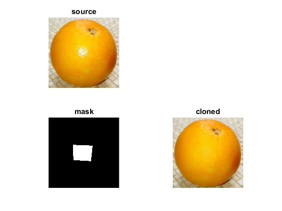

Seamless Cloning
This tutorial demonstrates how to use OpenCV seamless cloning module.
- Normal Cloning
- Mixed Cloning
- Monochrome Transfer
- Color Change
- Illumination change
- Texture Flattening
The program takes as input a source and a destination image (for first three methods) and outputs the cloned image.
Test images are downloaded from opencv_extra on Github.
Sources:
Contents
Test images
download required test images from Github
dirRoot = fullfile(mexopencv.root(), 'test', 'cloning'); dirs = { 'Normal_Cloning' 'Mixed_Cloning' 'Monochrome_Transfer' 'color_change' 'Illumination_Change' 'Texture_Flattening' }; imgs = { 'source1.png' 'mask.png' 'destination1.png' }; if ~isdir(dirRoot) mkdir(dirRoot); disp('Downloading images...') baseURL = 'https://cdn.rawgit.com/opencv/opencv_extra/3.2.0/testdata/cv/cloning/'; for i=1:numel(dirs) d = fullfile(dirRoot, dirs{i}); if ~isdir(d) mkdir(d); N = numel(imgs); if i > 3, N = N - 1; end for j=1:N f = fullfile(d, imgs{j}); if exist(f, 'file') ~= 2 url = [baseURL, dirs{i}, '/', imgs{j}] urlwrite(url, f); end end end end end
some options
opts = {'FlipChannels',true};
showPoint = @(I,p) cv.drawMarker(I, p, 'Color',[0 255 0], ...
'MarkerType','x', 'MarkerSize',30, 'Thickness',2, 'LineType','AA');Normal Cloning
src = imread(fullfile(dirRoot, dirs{1}, imgs{1}));
dst = imread(fullfile(dirRoot, dirs{1}, imgs{3}));
mask = imread(fullfile(dirRoot, dirs{1}, imgs{2}));
p = [400 100];
result = cv.seamlessClone(src, dst, mask, p, 'Method','NormalClone', opts{:});
figure('Name','Normal Cloning')
subplot(221), imshow(src), title('source')
subplot(222), imshow(showPoint(dst,p)), title('destination')
subplot(223), imshow(mask), title('mask')
subplot(224), imshow(result), title('cloned')Mixed Cloning
src = imread(fullfile(dirRoot, dirs{2}, imgs{1}));
dst = imread(fullfile(dirRoot, dirs{2}, imgs{3}));
mask = imread(fullfile(dirRoot, dirs{2}, imgs{2}));
p = [size(dst,2) size(dst,1)]/2;
result = cv.seamlessClone(src, dst, mask, p, 'Method','MixedClone', opts{:});
figure('Name','Mixed Cloning')
subplot(221), imshow(src), title('source')
subplot(222), imshow(showPoint(dst,p)), title('destination')
subplot(223), imshow(mask), title('mask')
subplot(224), imshow(result), title('cloned')Monochrome Transfer
src = imread(fullfile(dirRoot, dirs{3}, imgs{1}));
dst = imread(fullfile(dirRoot, dirs{3}, imgs{3}));
mask = imread(fullfile(dirRoot, dirs{3}, imgs{2}));
p = [size(dst,2) size(dst,1)]/2;
result = cv.seamlessClone(src, dst, mask, p, ...
'Method','MonochromeTransfer', opts{:});
figure('Name','Monochrome Transfer')
subplot(221), imshow(src), title('source')
subplot(222), imshow(showPoint(dst,p)), title('destination')
subplot(223), imshow(mask), title('mask')
subplot(224), imshow(result), title('cloned')Color Change
src = imread(fullfile(dirRoot, dirs{4}, imgs{1}));
mask = imread(fullfile(dirRoot, dirs{4}, imgs{2}));
result = cv.colorChange(src, mask, 'R',1.5, 'G',0.5, 'B',0.5, opts{:});
figure('Name','Color Change')
subplot(221), imshow(src), title('source')
subplot(223), imshow(mask), title('mask')
subplot(224), imshow(result), title('cloned')Illumination change
src = imread(fullfile(dirRoot, dirs{5}, imgs{1}));
mask = imread(fullfile(dirRoot, dirs{5}, imgs{2}));
result = cv.illuminationChange(src, mask, 'Alpha',0.2, 'Beta',0.4, opts{:});
figure('Name','Illumination change')
subplot(221), imshow(src), title('source')
subplot(223), imshow(mask), title('mask')
subplot(224), imshow(result), title('cloned')Texture Flattening
src = imread(fullfile(dirRoot, dirs{6}, imgs{1}));
mask = imread(fullfile(dirRoot, dirs{6}, imgs{2}));
result = cv.textureFlattening(src, mask, ...
'LowThreshold',30, 'HighThreshold',45, 'KernelSize',3, opts{:});
figure('Name','Texture Flattening')
subplot(221), imshow(src), title('source')
subplot(223), imshow(mask), title('mask')
subplot(224), imshow(result), title('cloned')